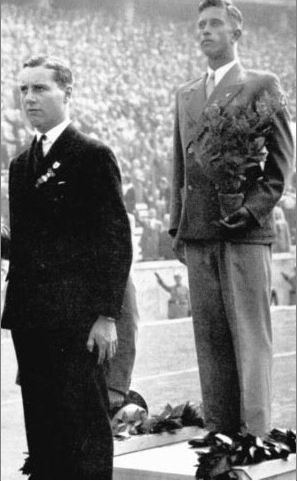

Stewart Morris[ext-link] (Trinity, Cambridge 1927, Wiki link), later to be an Olympic Gold Medalist, was the prime mover in the founding of the O&CSS in 1934. You can purchase an excellent history of the O&CSS – see the Merchandise page for details.
The Society maintains a page on Wikipedia[ext-link] giving a brief account of its history, details of members' Olympic participation, and details of members' World Team Racing Championships participation. Wikipedia also has a good article on the history of team racing[ext-link].
You can access Cambridge Varsity Teams lists via the History section of the CUCrC website[ext-link]. Oxford team records are currently paper-based.
The photograph below is of Peter Scott[ext-link] (Wiki link) on the podium with his single-hander Bronze medal at the 1936 Olympics. German Silver medalist Werner Krogmann is to the right, with some Nazi salutes visible in the background. Dutch Gold medalist Daan Kagschelland is hidden behind Peter. It is not clear what plant Werner Krogmann is holding, but year-old oak saplings were given to all Gold Medal winners at the Games.

Peter Scott at the 1936 Olympics medal ceremony